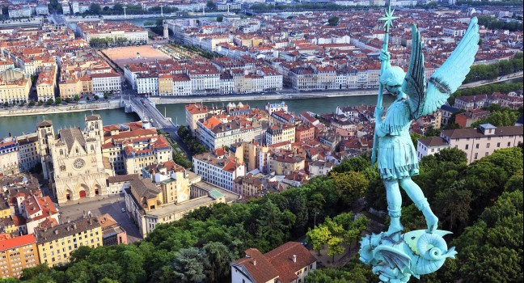

The begining
Once upon a time…
This is how all great stories begin - and believe me this one is really great (especially if you are Bulgarian in a foreign country).

It all started here, in our beautiful city Lyon, in the distant 2011.
A group of non-professional dancers decided to create a small dance group.
I still don’t know how the idea was born, maybe it was the love of dance,
maybe they were home sick or maybe there were searching for something –
something you can find only by experience the Bulgarian dances.

To be honest I don’t care why they started the group – I’m just grateful they did.
Without it I was going to miss so many amazing memories: new places, new people…
I always wanted to travel, see the world, but never imagined that I was going to journey around Europe
(for now, it’s about time we take a trip to another continent) with a dance crew
(mainly because I used to be a terrible dancer).